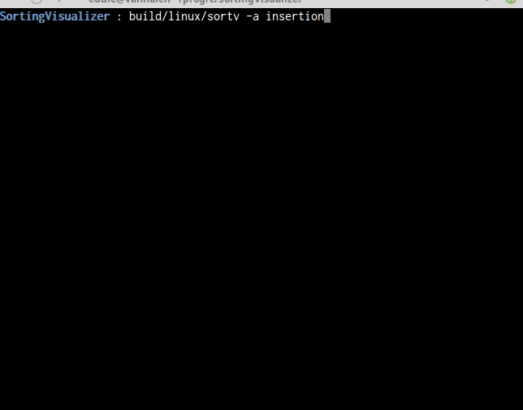

This Website!
Started April 2017
This website is one of two projects that
I maintain to practice my front-end development skills. The
other is this, a custom
New Tab page that I rewrite every few months so I have a
quick link to anywhere I want to go. I haven't learned as
much as I'm hoping for on the back-end side of things, but
I've been tinkering with a Raspberry Pi, and I'm hoping to
learn a lot on that front as well.
Edict
Started October 2017; Put on hold November 2017
Update: This was by far the
biggest project I have undertaken, and I made a lot of mistakes.
To salvage this, I'm going to have to put in a lot of work. So
for the moment, the project is on hold.
A Text Editor that I am writing for
personal use. I've been a devout Emacs user for a while,
but I have SO many issues with it, mostly related to how
bloated it is. So, I decided to write my own. It's not
fully-featured enough yet for actual use, but it's
completely functional. The rendering is done in SDL for
simplicity.

Unix Command Rewrite
Started May 2017

UCR is a project that I work on to
practice my low-level skills. Each time I go back to it, I
find a new Unix command to try and rewrite a simplified
version of in C. So far I've completed:
Sorting Visualizer
June 2017

This was my second attempt at making
a live sorting visualization program. It was more
successful than my first attempt, which had the unfortunate
problem where the program would not respond until it
finished the visualization. I certainly solved that problem
with this version, but my solution was far too complicated
and made it too difficult to implement any non-naive
algorithms. So all the algorithms you can use in this
version are the O(n^2) ones like Bubble, Insertion,
etc.
I plan to eventually redo this
project for a third time and find a way to keep the
implementation simple while also keeping the program from
locking up.
Color Picker
June 2017
Super-simple colour picking program
which supports RGB and HSV.

Agario-SDL
August 2017
This was a bit of a strange project. My goal here was not actually to
make a clone of the game Agario - that was just a conveniently simple game to emulate on a basic level.
My real goal was to create a framework of sort in SDL that I could reuse in later games. This means creating
generic solutions for things like shape-drawing, resource packing, screen/world space conversion,
texture storage in hash tables, etc. I
even wrote a little build system in python which has proven very useful.

LD38
April 2017
For the Ludum Dare 38 game jam, I
created the game Planetary Defense in 48 hours. In
this game, following the announced theme of "Small World",
you move around a planet as red aliens careen towards you.
You have to frantically place and replace your limited
supply of towers to fend off the alien threat.

Planetary Defense is written in C++
using the game framework SFML. I had a lot of fun writing
it, and a lot of challenge as well. There was a good amount
of trig involved in getting things to rotate with the
planet, as well as in having the enemies move towards the
planet. It was also difficult because this was within my
first week of using SFML, so the framework was still very
unfamiliar to me. Unfortunately, this resulted in
completely spaghetti code. I learned a lot from the
experience, though, which is all that matters.